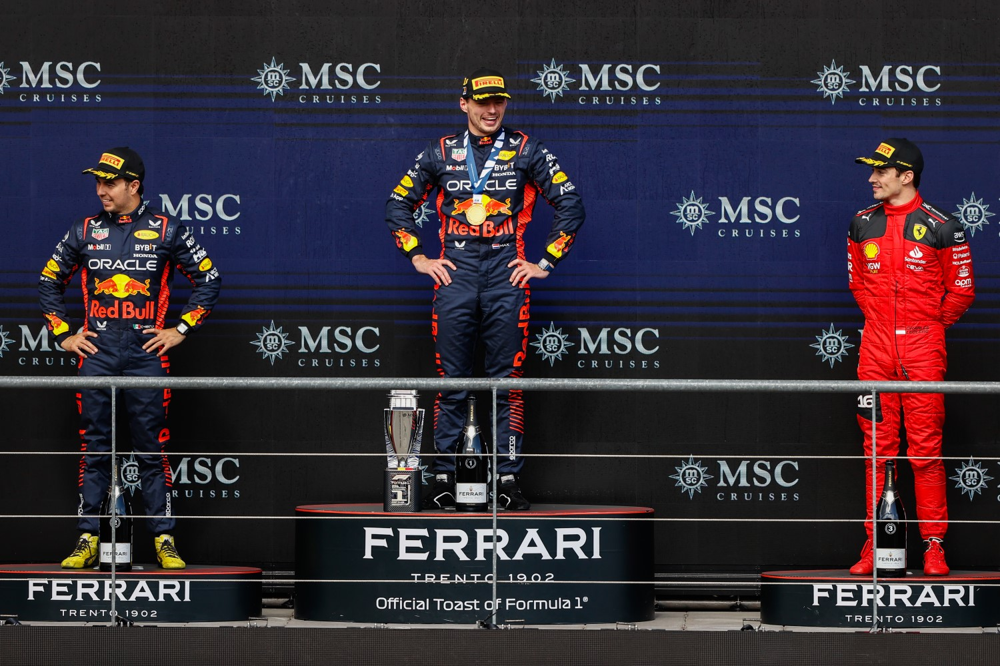
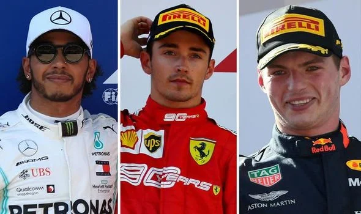

-

Uitslag 2023
P1. Max Verstappen - Red Bull Racing
P2. Sergio Perez - Red Bull Racing
P3. Charles Leclerc - Scuderia Ferrari -
WINNAARS VAN DE GP VAN BELGIE
- Max Verstappen - 2023
- Max Verstappen - 2022
- Max Verstappen - 2021
- Lewis Hamilton - 2020
- Charles Leclerc - 2019
-
CIRCUIT EN INFORMATIE
Circuit de Spa-Francorchamps ligt in de ardennen van Francorchamps, Stavelot, Wallonia en is geopend in 1921. Ook een van de oudere en daarmee mooiste Grand Prix om heen te gaan live. Met 19 bochten is Spa-Francorchamps ook het langste circuit van de kalender.
Alle wereldkampioenschappen rijden op dit Europees circuit. Het circuit heeft zelf ook ene event, namelijk de 24 Hours of Spa en World Endurance Championship 6 Hours of Spa-Francorchamps. Met de welbekende bochten Eu Rouge and Raidillon waar de coureurs een helling van 18% met 310km/u volgas doorheen gaan. Het meest indrukwekkend iets wat je een Formule 1 live zult gaan zien doen.Als je naar het circuit de Spa-Francorchamps gaat om de Formule 1 live in 2024 te zien, is dat een hele goede keuze. Het circuit ligt in België en is helemaal vol met de Nederlandse Max Verstappen fans. Je hebt niet meer Max Verstappen fans op een circuit als bij het weekend in Spa-Francorchamps. Natuur en machines ga je niet in een betere combinatie krijgen. Midden in de Ardennen een Formule 1 race op het circuit de Spa-Francorchamps.
De prijzen om de Formule 1 live te zien in België zijn enorm verschillend. Met 20 verschillend plekken rondom het circuit is alles mogelijk. De prijs om te kijken van vrijdagochtend tot zondagavond beginnen bij €255,00 en eindigen bij €849,00 euro. Dit hangt allemaal af op welke plek rondom je het circuit wilt zitten. Het is mogelijk om op de tribunes te zitten. Ook is het mogelijk om in de bergen zelf te zitten in de bronze gebieden. Dat is het goedkoopst en nogsteeds ideaal. Je zit tussen de Verstappen fans. Het circuit is goed te bereiken, met de auto kom je er goed je moet wel een parkeer ticket gekocht hebben van tevoren. De bussen gaan vanaf het treinstation Vierviers naar het circuit toe. En dat terwijl het circuit midden in de ardennen ligt.